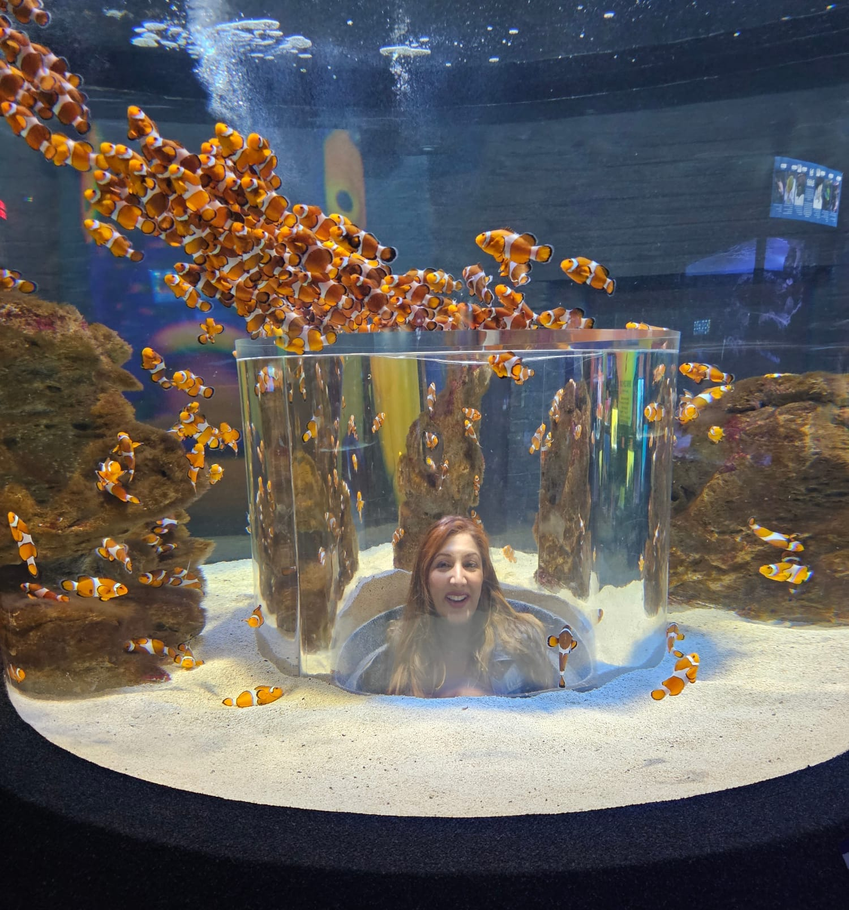

Saber means "to know." We exist to help people make confident, informed choices — about their health, their clinicians, and the places they travel to rest and recover.

Samrina exploring the Two Oceans Aquarium, Cape Town.
Saber Konnect was founded in South Africa with a simple belief: people deserve honest, verified information when it matters most — and they deserve time in nature to recover.
We bring together two things that are often kept apart: rigorous healthcare vetting and thoughtful wellness travel. Both are about trust. Both are about health. Both are built for South Africa.
Whether we are verifying a specialist against the HPCSA registry, or planning a restorative journey to the Kruger or the Cape, our goal is the same: bringing you closer to what you need to know, and closer to what heals you.
Three values guide everything we build.
Clinicians are cross-checked against HPCSA and SAHPRA. Trust should be earned, not claimed.
We believe time in the bush, by the sea, or under the Karoo stars is part of good health.
Proudly South African, built to serve people from here and from around the world.
Health and wellbeing, cared for on both sides of the journey.
Helping patients and pet owners find the right clinician — verified against official South African registries.
Learn more →Curated journeys across Kruger, Victoria Falls, Robben Island, the Karoo, Cape Town and Stellenbosch.
Explore journeys →